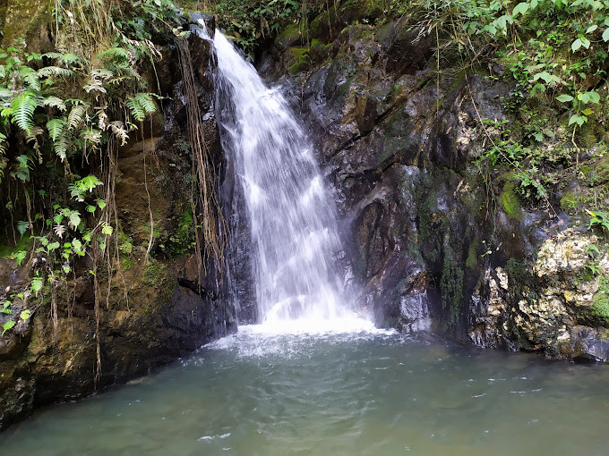
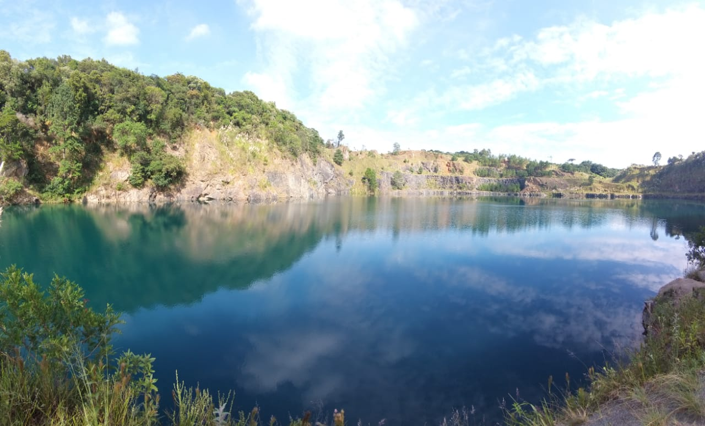
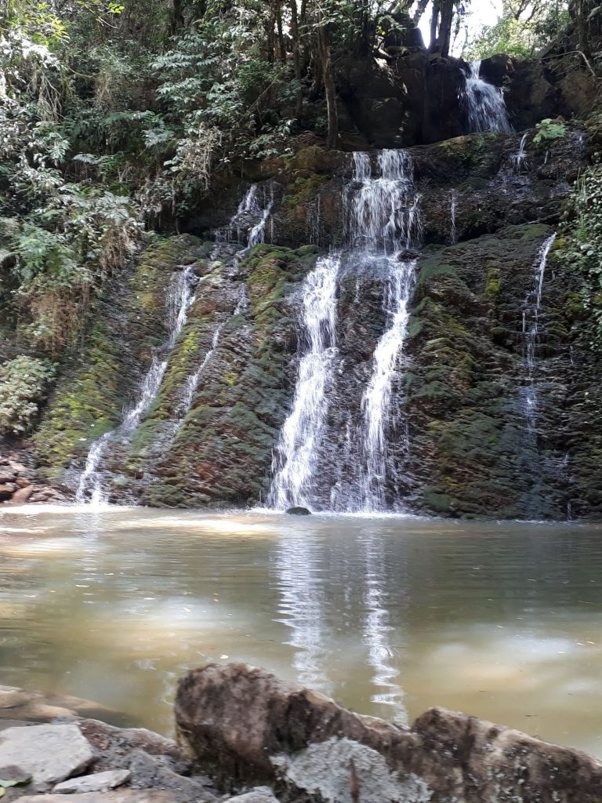

Aqui estão alguns dos pontos turísticos e naturais que você pode visitar em Campo Magro:
|

Cachoeira Gêmeas |
Parque Tanguá |
|

Pedreira Orleans |

Cachoeira Pedra Lisa |
Para mais informações, entre em contato conosco: